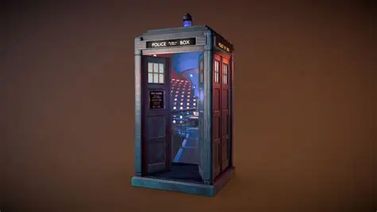
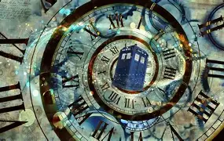

The Daleks
Ruthless creatures driven by a belief in their own superiority.
EXTERMINATE!Strange worlds. Legendary enemies. Extraordinary lives.
Some of the most memorable threats to the Doctor and their companions.
Ruthless creatures driven by a belief in their own superiority.
EXTERMINATE!The creator of the Daleks.
THERE IS NO SHIP, NOT A PRISON THAT CAN HOLD ME!Cybernetic lifeforms.
YOU WILL BE UPGRADED!Master of all matter.
PREDICTABLE AS EVER, DOCTORQuantum-locked scavengers.
DON'T BLINK!
